Turrets you build onto the tank and that fire by themselves, an enemy tank that hunts you, money, shops and quests, online play through Steam with a main menu, repairs with a welding torch, and buildings for the first village.
The week in numbers
New this week: we count what happens, so we can follow it over the months. Students is what students made or found; everything is all the work in the project, by students and teachers (and our AI tools).
| Students | Everything | |
|---|---|---|
| Bugs crushed | 9 (all found by Bjørn) | 12 |
| New features | 4 | 24 |
| Changes | 0 | 11 |
| New assets | 7 models | 34 |
| Students who helped this week | 6 | |
| Students who have helped, in total | 6 | |
Students this week: Sebastian, Mikkel, Tobias, Emil, Bjørn, and the student who modelled the turret.
What we made
Online play and menus
- Online play through Steam. Host a game, find games and join them. Emil set it up, with Claude.
- A main menu, a loading screen and a settings menu (quality and window mode), with temporary sounds and music. Emil made them, and a server browser is on the way.
Items, crafting and repair
- An inventory: a backpack for you and storage for the tank, items to pick up, and crafting from raw materials into engineering supplies (armour plates, construction materials, mechanical and technical parts, structural prefabs).
- A welding torch that repairs armour while you hold R, and wears out as you use it. Mikkel modelled it.
- The bolt you pick up is now a real model, by Tobias. He also made scrap metal.
- Upgrades: press E on a piece to upgrade it with supplies from the tank. The first is Sebastian's antenna, with three levels.
Turrets and combat
- Turrets on the tank. Build a floor tile with a turret hole, or a wall with a gun port, and put a turret on it. Its control panel is underneath: press E to man it.
- Five kinds of ammo (standard, explosive, armour-piercing, shrapnel, incendiary). T switches.
- Factions, and turrets that fire by themselves. Every few seconds the antenna looks for enemies (40, 60 or 80 m, by its level) and points the turrets at them. A player at the controls always wins.
- Every piece you build has health. At 0 it breaks and stops working, and the welding torch brings it back.
- A new kind of armour damage: any mesh can get real holes, shaped by the kind of shell, its size and the angle it hit at. Repaired holes glow hot and close slowly.
The first enemy
- A tank spawner: place a saved tank design in a level, as an enemy or as a player tank.
- The first enemy brain: the enemy drives at your tank, circles it and shoots, backs off when it gets stuck, and drops loot when you break it.
Money, shops and quests
- Money is power crystals. The Empire's coins are the spark, the click (1 000 sparks), the mulah (a million) and the bingo (a billion). Nobody counts change: paying makes it by itself. Other factions get their own money later. The idea.
- Shops: each shop has its own list of what it sells and buys, at its own prices, and some things run out. Multiplayer from the start.
- Quests: someone in the world gives you a job made of steps: go to, find, talk to, bring, deliver, destroy. Crew quests are shared by everyone on the tank; personal quests are secret, which is perfect for a traitor. "Find" has no marker: you have to look. The idea.
- The Quest Maker, our own tool in the editor, so students can make quests from a form, with a preview and a checklist.
Building, and the first village
- Building costs materials outside the workshops. Removing a piece gives them back, destroyed pieces drop some of them as loot, and repairing a destroyed piece costs them again.
- Faster building: walls on walls, stairs on stairs, a floor at the top of the stairs, and roofs on walls and on each other.
- New pieces: doorways and doors that open with E, gun slits, windows, a gate, a bannister, platforms with a step up, a corner column and a roof.
- A building spawner: place a saved building anywhere in a level, fitted to the ground. Now we can design desert buildings for villages and outposts.
- Trees and cacti the tank can crush. Scattered over the desert by Unreal's PCG; whether the tank breaks through or gets stopped depends on its weight and speed.
Sound
- Footsteps that sound like the ground: metal, wood, rock, dirt, grass, tile and more, also for jumps, landings and climbing. Tanks sound like metal, houses like tile. A test level has a strip of every surface.
Bugs crushed
Bjørn tested hard and reported eight bugs on Discord, with screenshots. Nine fixes came from them:
- The control panel was hard to aim at with E.
- Walls could overlap, and you couldn't build walls on walls.
- Tracks were left behind when a track housing was turned or replaced.
- No floor from the top of the stairs.
- Wrong or leftover tracks from the build preview.
- Track housings could go anywhere, even up in the air, where they gave extra lift and speed. Now only on the bottom floor, along the tank.
- Some turret shots went straight through armour walls.
- You could climb a giant invisible box around the turret.
- Rubble from destroyed things could throw players across the level.
And three found while building: stacked walls came out lower than stairs, nothing could be built on top of doors, and a stream of error messages while building.
Still open: a crash with a very big tank (we need the log), and build mode needs a way to hover and pass through walls.
What we found
- Our shared log file was overwritten twice when two computers saved it at the same time. Now everyone writes their own log, and they are put together every Sunday.
- Rubble and players don't mix: standing on loose physics pieces could launch you. Players now walk through rubble, and rubble cleans itself up.
- The tank's crusher only looked at the hull, so the track housings got stuck on plants. It now checks everything on the tank.
- Real plants are big: Joshua trees are 5 to 9 m tall, saguaros up to 12 m. Ours were far too small.
Decisions
- The compiled C++ is shared, so students without Visual Studio can open the project.
- We don't edit packs from outside (like Epic's animation sample); we extend them or copy them into our own folder.
- What a piece costs is in one table, so all prices can be compared and balanced side by side.
With reasons: Decisions.
Votes
Two new votes on Discord: how serious should the game be, from 1 (very sombre) to 10 (full cartoon silly), and what kind of map: a fixed hand-built world, a dynamic one that changes, or a mix of hand-built towns with generated land between them. We also tried out a theme song idea. Decisions.
For students
- Workshop guides: a new Discord forum with step-by-step guides to our tools and systems. The first five: make a quest, make a turret, make new ammo, report a bug, greybox a level. About five more every week.
- Commissions: new 3D and audio tasks on Discord, from crates, barrels and bunks to track sounds and coins.
- Next student tasks: build a proper player tank and a proper enemy tank in the workshop, and a loot spawner.
New ideas
Quests: shared and secret (being built) · Power crystals, a money for each faction (being built) · Repairs (now partly built)
Pictures

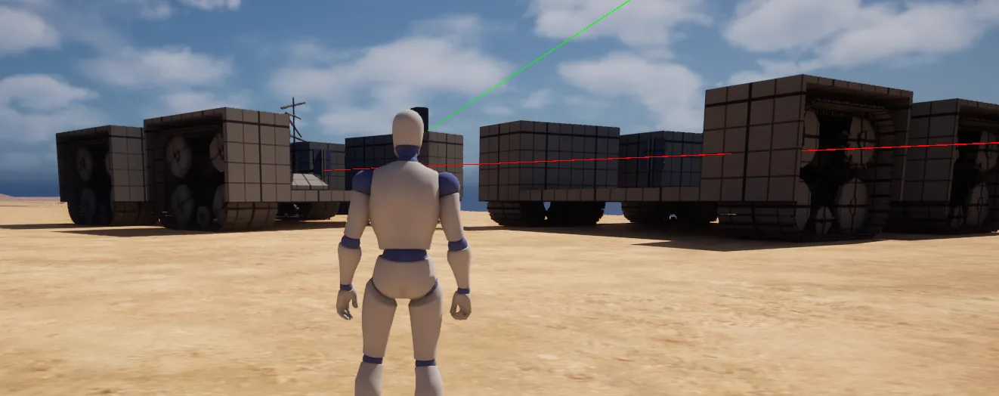

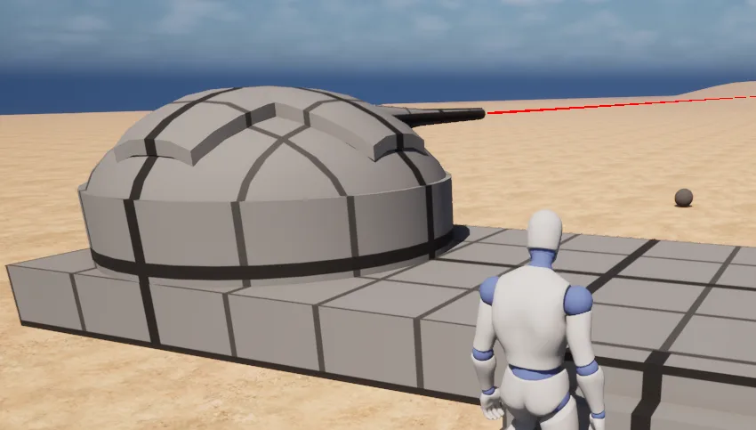

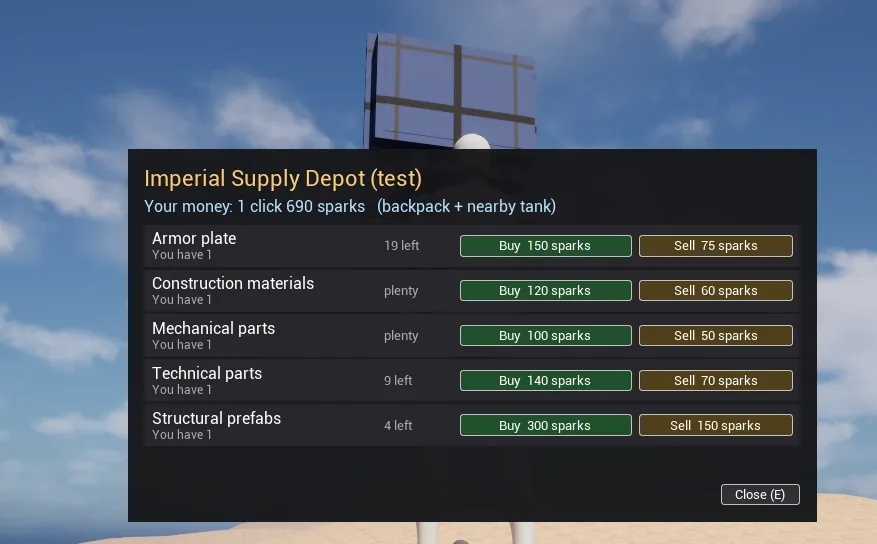

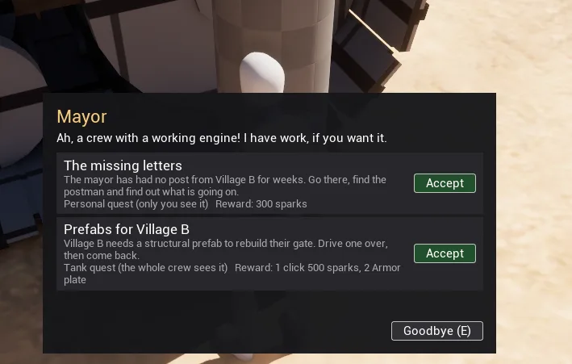

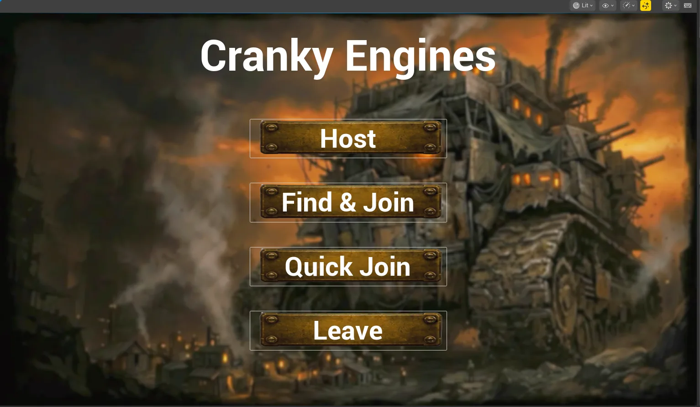

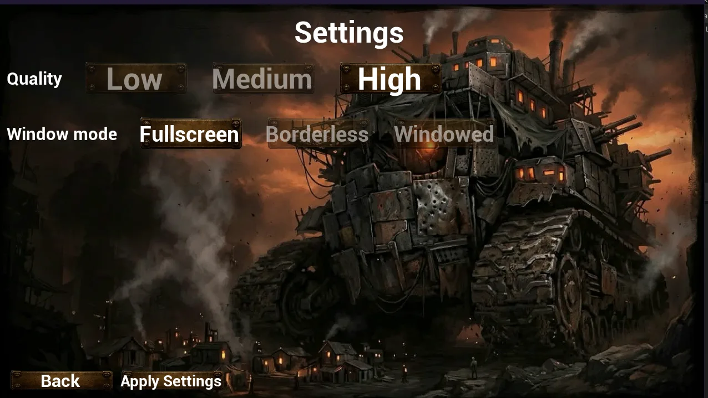

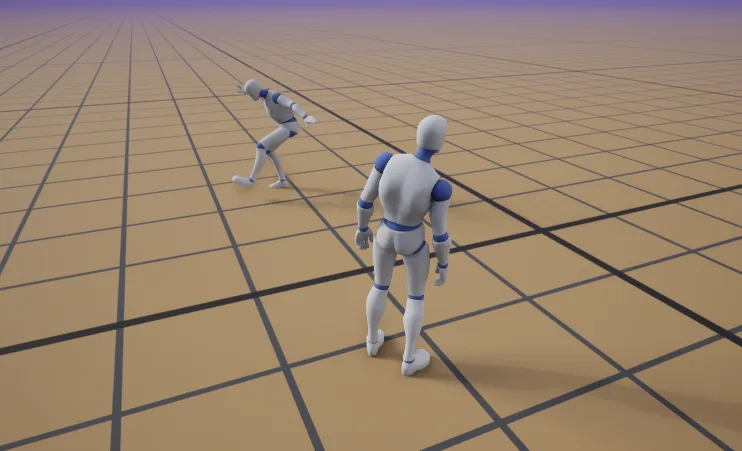

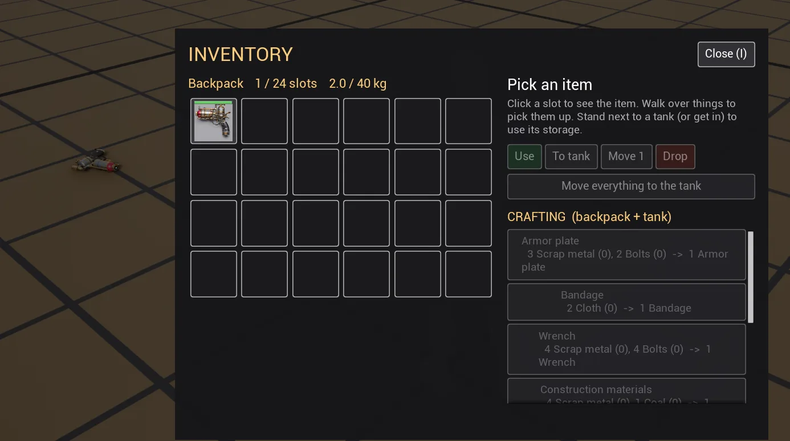

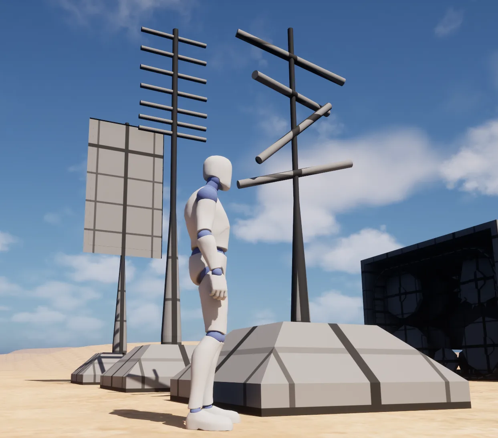

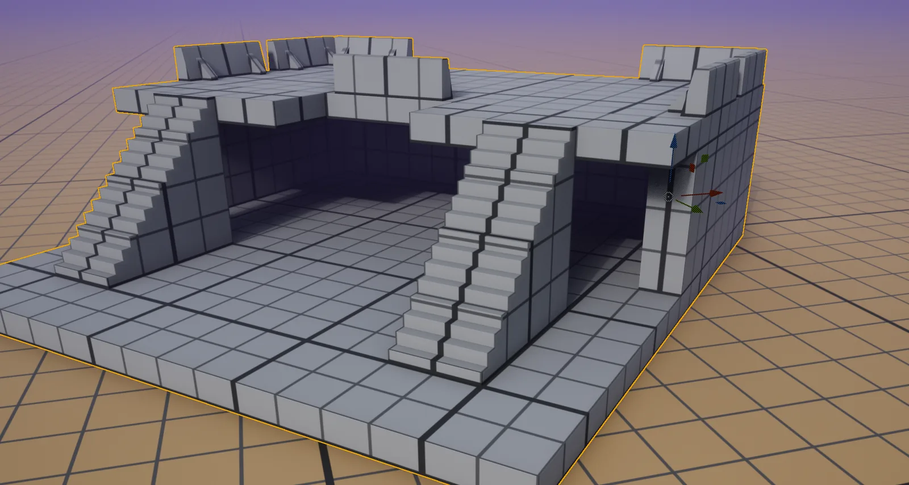

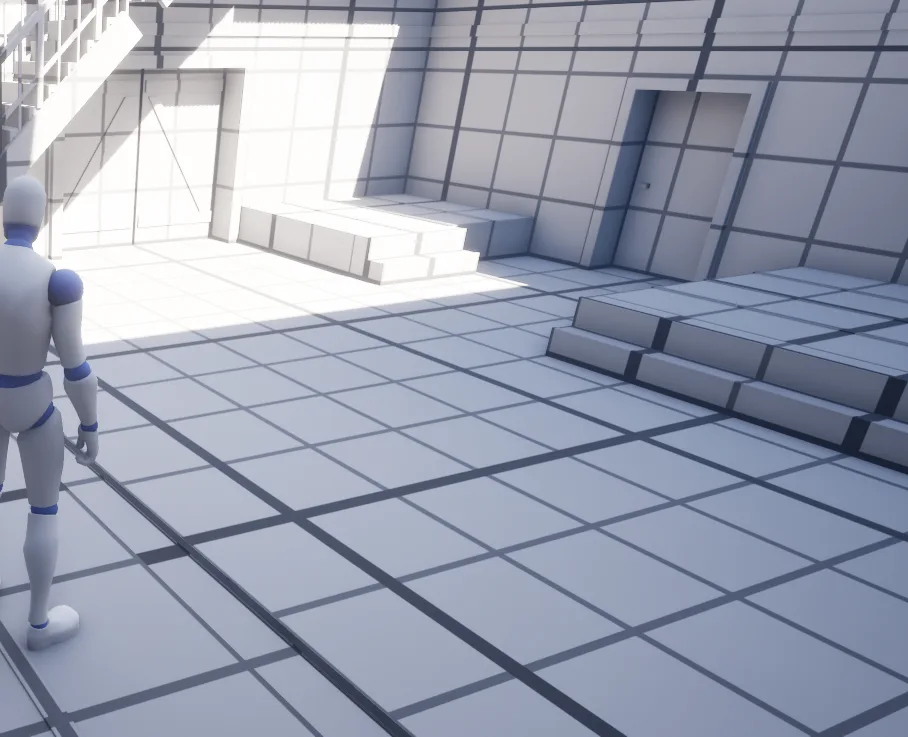

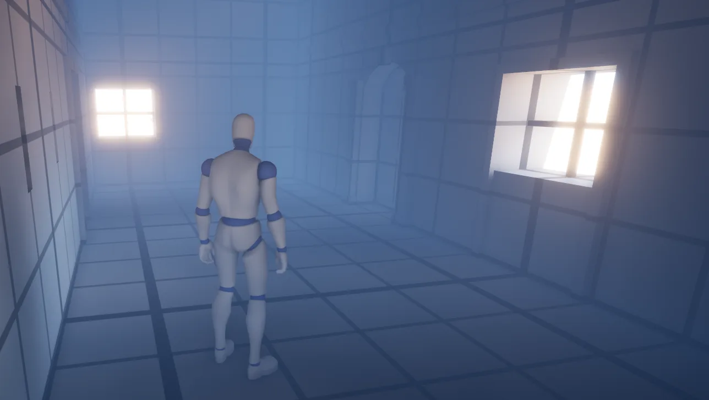

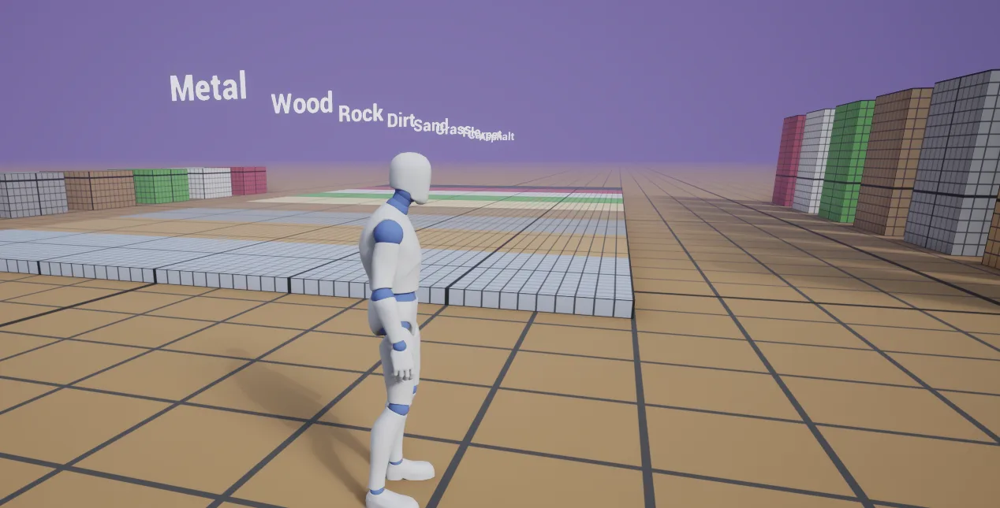